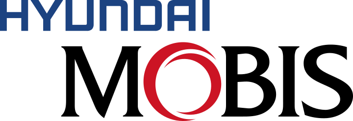

설립연도
1977년

현대차와 기아에 들어가는 핵심 부품과 모듈(여러 부품을 묶은 큰 덩어리)을 만들고, 전 세계 현대차·기아 차량의 수리용 부품(A/S 부품)을 공급하는 회사예요. 현대차의 최대주주이기도 해서 현대차그룹 지배구조에서 중요한 자리에 있어요. 2025년 영업이익은 3조 3,575억 원이었어요.
칸에 마우스를 올리거나 누르면 자세한 설명을 볼 수 있어요.
운전석, 차체 아래 뼈대(섀시), 앞부분 같은 큰 덩어리를 미리 조립해 자동차 공장에 공급해요. 브레이크·조향 장치 같은 안전 부품도 만들어요.
대표 예운전석 모듈, 섀시 모듈, 제동·조향 장치
전기차와 하이브리드차의 배터리 시스템, 모터와 인버터 같은 구동 부품을 만들어요. 친환경차가 늘면서 커지는 사업이에요.
대표 예배터리 시스템(BSA), 전기 구동 부품
전 세계에서 달리는 현대차·기아 차량을 고칠 때 쓰는 정품 부품을 공급해요. 차가 많이 팔릴수록 꾸준히 수요가 생겨서, 이익률이 높은 효자 사업이에요.
대표 예수리용 정품 부품, 전 세계 물류센터
자율주행에 필요한 레이더·카메라와 운전자 보조 장치, 차량용 반도체를 개발해요.
대표 예레이더, 카메라, 주행 보조 시스템
| 기간 | 매출 | 영업이익 | 순이익 |
|---|
사업마다 겨루는 상대가 달라요